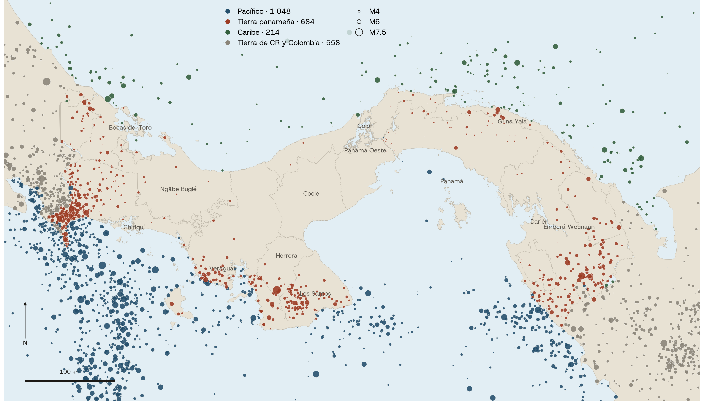
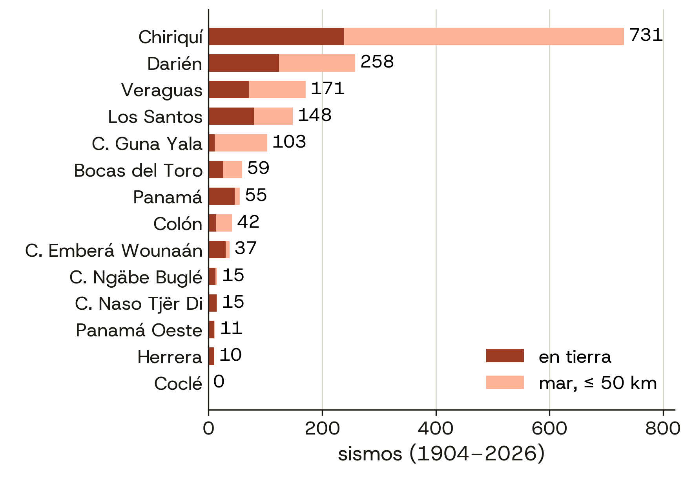
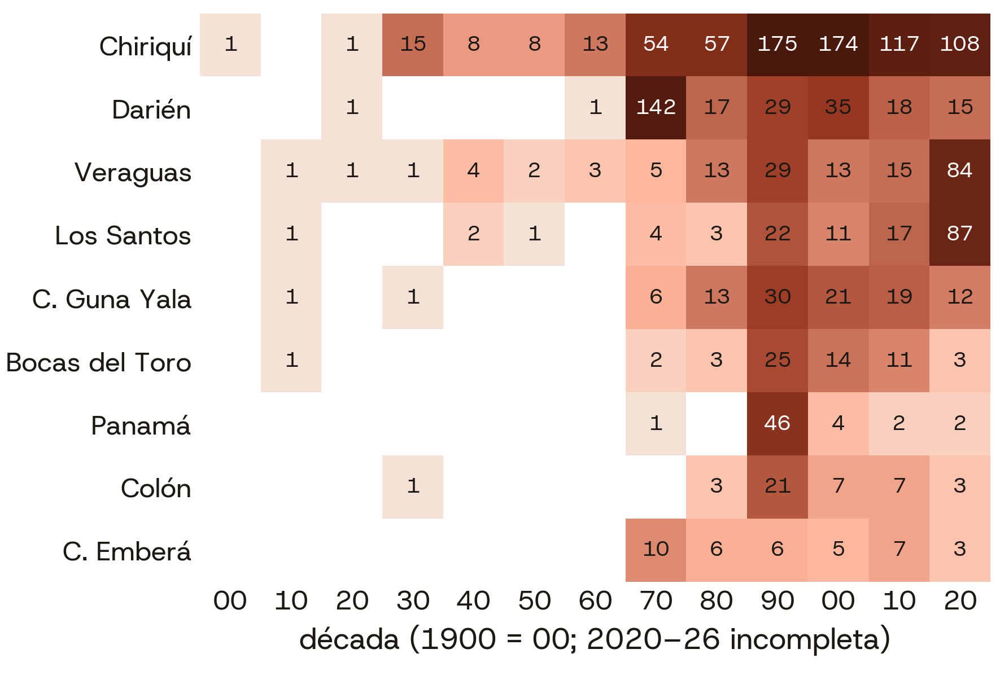
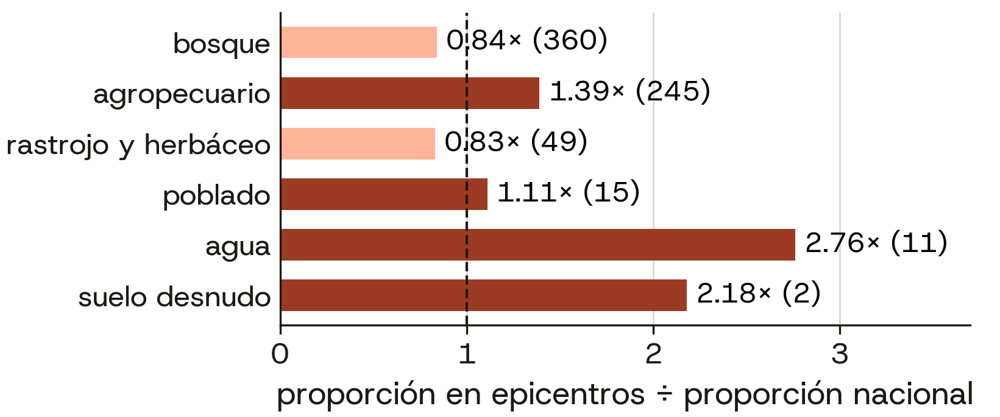
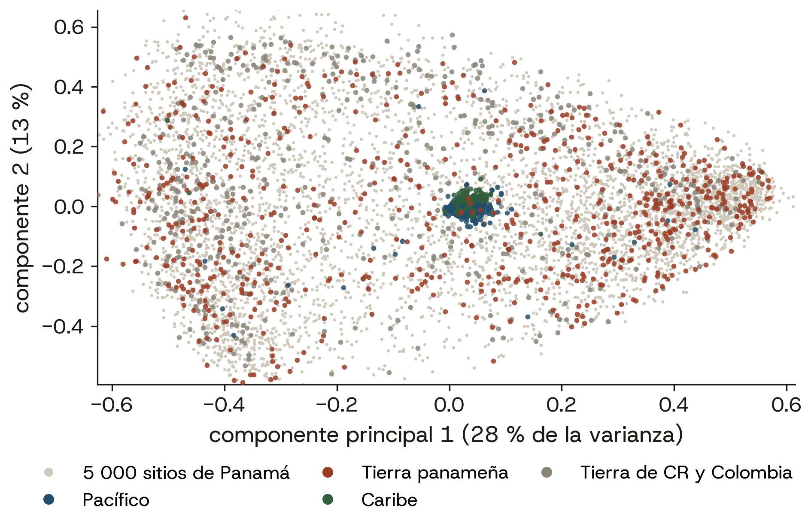
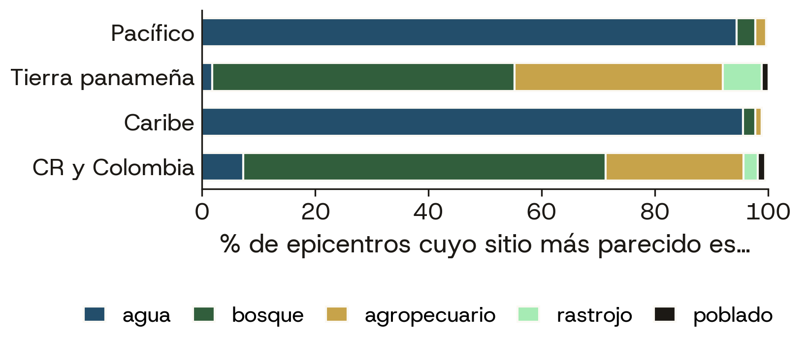
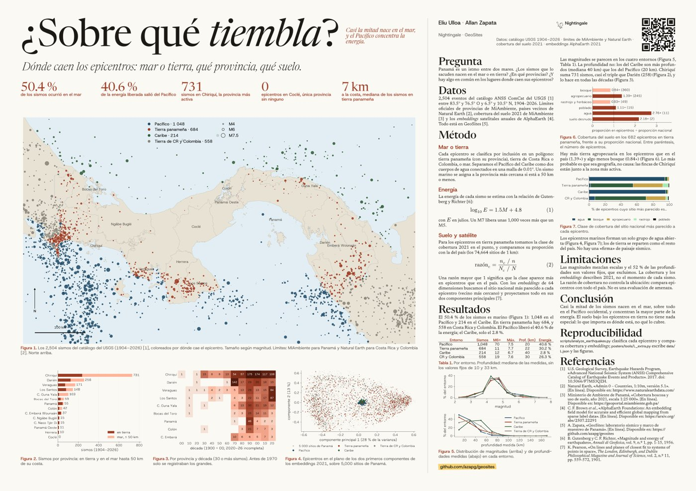

Investigación · Panamá y su entorno · 1904–2026
¿Sobre qué
tiembla?
La mitad de los epicentros está en el mar. En tierra, la ubicación ayuda a interpretar el patrón más que la cobertura del paisaje.
Leer el póster L en PDF ↗A1 horizontal · 2.1 MB · Vista previa y descarga

Contar sismos y sumar energía
responde preguntas distintas.
El Pacífico reúne 1,048 eventos (41.9%); el Caribe, 214 (8.5%). Juntos suman 1,262 sismos marinos: el 50.4% del catálogo. Otros 684 epicentros están en tierra panameña y 558 en Costa Rica o Colombia.
La energía estimada se reparte de otra manera: 40.6% en el Pacífico, 30.2% en tierra panameña, 26.3% en los países vecinos y 2.8% en el Caribe. Unos pocos sismos grandes pesan mucho más que numerosos eventos pequeños.
El Pacífico es el entorno con mayor participación individual de energía; su 40.6% no constituye una mayoría del total. Los porcentajes redondeados pueden no sumar exactamente 100%.
Proporción de eventos por entorno
Cada barra usa una escala de 0 a 100% del catálogo.
| Entorno | Eventos | Del catálogo | Energía | Profundidad mediana* |
|---|---|---|---|---|
| Pacífico | 1,048 | 41.9% | 40.6% | 20 km |
| Tierra panameña | 684 | 27.3% | 30.2% | 22 km |
| Caribe | 214 | 8.5% | 2.8% | 40 km |
| Tierra de CR y Colombia | 558 | 22.3% | 26.3% | 30 km |
* Excluye profundidades fijas de 10 y 33 km. La mediana es 40 km en el Caribe y 20 km en el Pacífico.
Chiriquí concentra el mayor
número de eventos.
Chiriquí suma 731 sismos: 238 en tierra y 493 en el mar, hasta 50 km de su costa. Darién reúne 258 y Veraguas 171. La asignación incluye comarcas y provincias. Cero epicentros asignados a Coclé en esta instantánea no significa ausencia de amenaza sísmica.


Las diferencias entre décadas también reflejan cambios en la detección y en la completitud del catálogo. La década de 2020 está incompleta.
Una asociación geográfica
no demuestra una causa.
En los 682 epicentros terrestres con cobertura disponible, el uso agropecuario representa el 35.9%, frente al 25.9% del marco nacional: una razón de 1.39. El bosque representa el 52.8%, frente al 62.8% nacional: una razón de 0.84.
Esta comparación no controla la ubicación. La coincidencia de áreas agropecuarias con zonas sísmicamente activas, como Chiriquí, puede explicar la asociación. La cobertura del suelo no queda establecida como causa de los sismos.
Los vectores satelitales AlphaEarth de 2021 tampoco revelan una firma de paisaje sísmico inequívoca en esta exploración. Los puntos terrestres se distribuyen entre paisajes habituales del país; los marinos con datos válidos se parecen principalmente al agua abierta.



Del catálogo al territorio.
Ubicar cada epicentro
Catálogo ANSS ComCat del USGS, entre 83.5° y 76.5° O y 6.5° y 10.5° N. La bibliografía del póster identifica la instantánea del 7 de noviembre de 2026.
Clasificar mar y tierra
Inclusión en polígonos de MiAmbiente y Natural Earth. Pacífico y Caribe separados por conectividad en una malla de 0.01°. Los eventos marinos se asignan a la provincia más cercana solo si están a 50 km o menos.
Estimar energía
Relación de Gutenberg y Richter:
log₁₀ E = 1.5 M + 4.8, con E en julios. Es una aproximación basada en la magnitud: un M7 equivale a unas 1,000 veces la energía de un M5.Comparar paisajes
Cobertura del suelo 2021 frente al marco nacional de 74,664 sitios de 1 km. Vectores AlphaEarth de 64 dimensiones, vecino más cercano y proyección en dos componentes principales sobre una referencia de 5,000 sitios.
El póster, con todos los detalles.
Consulta el método, las figuras y las referencias en la versión L original. El resumen web precisa la interpretación de la energía: el Pacífico aporta la mayor fracción entre los cuatro entornos, sin superar la mitad del total.

Descargar póster L · PDF A1 horizontal Descargar resultados · JSON
Fuentes y reproducibilidad
Resumen elaborado a partir del póster L y de posters/data/L.json. Las figuras se generan con posters/tools/L_extra.py a partir del laboratorio sísmico de GeoSites.
- USGS · ANSS Comprehensive Catalog (ComCat)
- MiAmbiente · límites y cobertura boscosa / uso de suelo 2021
- Natural Earth · límites de países vecinos
- Brown et al. (2025) · AlphaEarth Foundations
- GeoSites · repositorio de la investigación (el acceso al código depende de los permisos del repositorio)